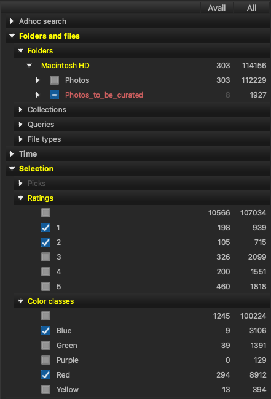

The Filters panel narrows what you see to the images that match what you check. It is made of categories, such as Ratings or Keywords, and each category holds items, such as the ratings 1 to 5.
Checking several items in one category is OR: rating 1 or rating 2. Checking items in several categories is AND: rating 1 or 2, and color class red or blue. Keywords are the one exception you can change: see Any or all keywords below.
You can also exclude items. In this example the filter shows every image rated 1 or 2 with color class red or blue, leaving out the images in Photos_to_be_curated.

A category, its group heading and the Filters title turn yellow while they are filtering, so you can tell a filter is on even with its category closed.
Each item shows two counts: how many images have it, and how many of those are left after the other filters.
To turn every filter off, press Shift+C or right-click the panel and choose Clear all filters.
| Do this | To |
|---|---|
| Click | include the item. Click it again to clear it. |
| Opt+click (Alt+click on Windows and Linux) |
exclude the item. It is shown struck through in red. |
| Shift+click | include every item between the last one you checked and this one, within one category. If they are all included already, the same Shift+click clears them. |
| Opt+Cmd+click (Alt+Ctrl+click on Windows and Linux) |
filter on this item only. Every other filter is cleared, including the search text. |
| Shift+Opt+Cmd+click a folder (Shift+Alt+Ctrl+click on Windows and Linux) |
filter on this folder only, without its subfolders. Do it again, or just click the folder, to turn it off. |
Every one of these is also on the right-click menu of an item, by name: Include, Exclude, Clear and Filter only this. Hover over the Folders heading for a table of all the folder clicks.
An exclusion always wins. An image that has an excluded item is left out whatever else it matches, in every category, not just the one you excluded from.
A category holding only exclusions subtracts rather than narrows: excluding the color class red shows everything that is not red.
Everything beneath an excluded folder or keyword is excluded with it. It is shown struck through in red too, although its own box stays clear.
An excluded item's count is greyed: it is the number of images the exclusion leaves out. Those images are not counted anywhere else, so a parent folder, a drive or a keyword branch above an excluded item counts only what is left.
Click a category to open or close it. In Solo mode (right-click the panel to turn it on or off), opening one closes the others. Hold Cmd (Ctrl on Windows and Linux) while clicking to open one without closing the rest.
To see only what is filtering, right-click the panel and choose Expand checked filters, or double-click the empty space below the filters. Every category is closed except those with a checked or excluded item, which are opened down to that item.
The groups / flat button in the Filters title bar (the stacked lines, beside the expand/collapse button) switches how the categories are arranged. Grouped, they sit under six headings: Folders and files, Time, Selection, Camera, Metadata and Status. Flat, they are one list. The right-click menu has the same switch as Group categories.
The order is the same either way, and nothing you have checked changes. When you switch to groups, a category you have open stays open under its heading, and headings with no open category are closed.
The Time categories filter on the capture date. Years, Months of year and Days of month combine: check June under Months of year to see every June, or 15 under Days of month to see the 15th of every month.
File types sorts the types under Images and Videos. Check Images to see every image type at once, or Videos for every video. You can still check single types, like JPG or MP4, underneath.
A keyword is its whole path, so Keywords is shown as a tree. Each row shows the last part of the name; hover it to see the full path.
Checking a branch finds everything filed beneath it: checking Canada finds every image keyworded with anything under Canada, without opening the branch. A branch's count is the total of everything inside it.
Two keywords with the same name in different places are different keywords. Location > Canada > BC > Vancouver and Location > USA > Washington > Vancouver are separate rows, each with its own count, and checking one finds only its own images.
To include a branch but leave part of it out, check the branch and exclude the part: check Location, then Opt+click USA beneath it.
Use the Keywords panel (Window > Keywords Panel) to add, rename, move and delete keywords, and to tag the selected images.
An image can carry many keywords, so checking two of them can mean images with either, or images with both. The Keywords heading shows which in its count column: any (the default) or all. Click it to switch, or right-click the category for Match all checked keywords.
To find photos keyworded both Family and Beach, check both and set the heading to all.
The label is dimmed while fewer than two keywords are checked, because until then the choice makes no difference. A branch still stands for everything beneath it, so Location and Beach means "any Location keyword, and Beach". Opening another folder, or the Library, sets it back to any.
The Status group has two categories for duplicate images. A duplicate is another image in the Library with the same capture time, file type and pixels; see Manage Catalog help for how they are found.
Duplicates are found by File > Manage Catalog > Duplicates. Until that has been run once, there is nothing for these categories to show.
Duplicates found lists the images that are duplicates, and, under Okayed, the ones you have marked as meant to be there with Edit > Duplicate Okay. Check the duplicates to review them all; their thumbnail numbers are bright red, and okayed ones are purple.
Tools > Find duplicates also fills this category, with the images it found in the folders you chose.
Duplicates of appears when you select a duplicate and choose Show Duplicates of This Image from the thumbnail right-click menu or the Edit menu. It shows only that image, its twins and their versions, so you can decide which copy to keep.
Uncheck Duplicates of to go back to the filters you had before. Trashing one of the copies from it goes back to them too.
Duplicates found describes the loaded images, so it does not appear in Filters (Catalog).
The Adhoc search category at the top of the panel is a filter like the others, except that you type it. Click the row reading Enter search query, type your query and press Return. Nothing happens while you type: the query runs when you press Return. F2 jumps to the row.
A query and your checked items combine like any two categories (AND).
Unchecking the search row leaves the query in place but stops it filtering. The No match row beside it shows the images the query did not find.
Delete the text and press Return to remove the query.
Everything Winnow holds as text for an image: its full path (folder and filename), keywords, title, creator, copyright, colour label, camera make and model, lens, dimensions, the shooting information, and any e-mail or URL. A query does not search the picture itself; for that, use the AI masks in Develop.
Because the path is searched, a word that is in your user name or a drive name is in every image's text.
Your own name is probably in most of your library. Most cameras stamp creator and copyright into every file, so searching for your own name matches nearly everything. The same is true of a camera body you have owned for years. Add a second word.
A word matches anywhere inside a word: eron finds Heron. The exception
is when Maximum search results in Preferences is set to a
limit. Images past that limit are found in the catalog index, which matches only from
the start of a word, so there her finds Heron but eron
does not.
| Type this | To find |
|---|---|
heron nanaimo |
images with both words. A space means AND, the default.
heron AND nanaimo is the same. |
heron OR eagle |
images with either word. |
-heron |
images without the word. NOT heron is the same. |
"great blue" |
the phrase, not the two words in any order. |
(heron OR eagle) tide |
brackets group: see below. |
OR, AND and NOT are operators only in capitals. A photograph captioned "black or white" is searched for as written.
AND binds tighter than OR, as in most search boxes and spreadsheets. So
heron OR eagle nanaimo means every heron, plus the eagles at
Nanaimo. Brackets say the other thing: (heron OR eagle) nanaimo means
herons or eagles, at Nanaimo. Brackets nest as deeply as you like.
An unfinished bracket is not an error. A missing ) is closed for you at
the end, and a stray one is ignored, so a half-written query narrows rather than
failing.
To search for a bracket as a character, such as the filename DSC(2), put
it in quotes: "DSC(2)".
A NOT always applies to the whole query, wherever you write
it, even inside a bracket. tide -(heron OR eagle) excludes both birds, and
heron OR -tide is read as heron, and not tide, because that is the
only reading the catalog index can carry out. If you mean two different exclusions, run
them as two queries.
heron anything mentioning heron
"great blue" -captive the phrase, minus one word
(heron OR eagle) 2024 either bird, in a folder or filename with 2024
Z9 (100-400mm OR 500mm) one body, either of two lenses
nanaimo NOT (fog OR rain) a place, in decent weatherRight-click the search row for:
The panel's title says which scope you are in. Filters (Folders) searches the images that are loaded now. Filters (Catalog) searches every image Winnow has catalogued, across all your folders. A query means the same thing in both.
To change scope, click the Catalog subpanel of the Source panel, or use File > Open Catalog. The search text carries across, so a search that found nothing in a folder is one switch away from being asked of the whole Library.
The categories are rebuilt for the scope: a folder offers the three cameras in it, the Library offers all forty.
To filter on something that has no category, such as aperture or camera make, right-click the panel and choose Filter on.... Pick a column, and a category for it is added at the bottom of the panel, built from the images that are loaded. It works like any other category, and stays until you quit Winnow, even when you change folders.
Aspect Ratio is the shape of the original file. To filter on how an image looks after you crop it in Develop, including a version with its own crop, use Cropped Aspect.
To remove the category, right-click it and choose Remove, which also clears any filter it was applying. These categories work in Filters (Folders) only, because the catalog cannot answer an arbitrary column.
Right-click the Filters panel and choose Show current image folder to open the Folders category to the folder that holds the current image, scrolled into view.
Right-click a thumbnail and choose Show current image folder to do the same for that thumbnail.
This only shows the folder; it does not filter on it.
Drag thumbnails onto a folder in the Folders category to move the images there. Their sidecars go with them. Anywhere other than a folder, the cursor shows that they can't be dropped.
Winnow asks before moving anything. If a file with the same name is already there, it lists the names and offers Rename (the moved image becomes name_1), Overwrite (the existing file goes to the trash) or Cancel.
A version is not a separate file: it is kept in its image's sidecar. Dragging a version therefore moves the image and all its versions, and the confirmation says so.
After the move the folder counts update, and your checked filters stay checked.
Right-click a folder in the Folders category:
A renamed or moved folder stays checked if it was, and its images keep their ratings, edits, collections, picks and history. If you move a folder outside the folders your Library covers, its images leave the Library, and Winnow tells you how many.
These choices are greyed out, with the reason, while the Library is loading, when the folder's drive is not connected, or when the row is a whole drive.